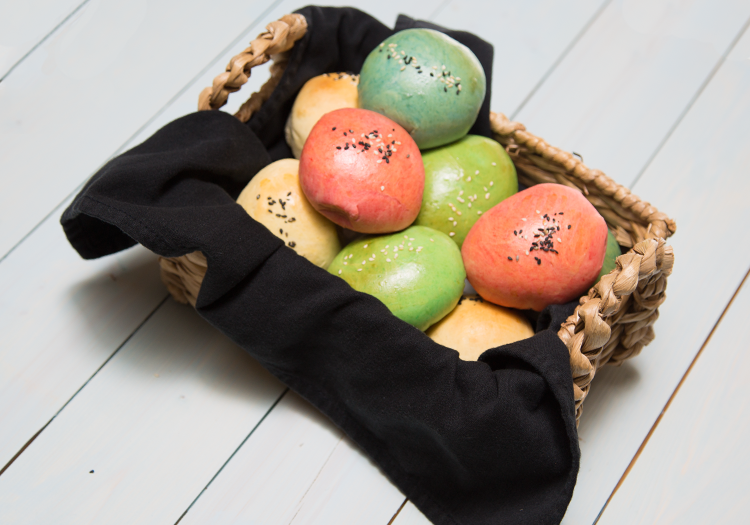

Poffin - PokéRecipes
Poffin

Delicious, cream-filled sweet rolls
This tasty snack is modelled after the poffin - a combination of the words pokémon and muffin - which is the favorite snack of most creatures in the pokémon world. In reality, these are traditional Japanese sweet rolls, known as anpan. Though usually filled with bean-based or nut-based fillings, we're going to make a much more sugary snack.
This recipe makes 6 poffins.
Ingredients:
Custard filling
- 1 ¾ cup milk
- 4 tbsp butter
- 4 egg yolks
- ½ cup sugar
- 5 tablespoons flour
- 2 tablespoons cornstarch
- ½ tsp salt
- 3 teaspoons vanilla extract
- jams
- matcha
Buns
- 1 ¼ cup milk, lukewarm
- ¼ cup sugar
- ¼ cup butter, melted
- 2 teaspoons yeast
- 1 egg
- 1 tsp salt
- 4 cups flour
- sesame seeds (or sprinkles)
- food coloring
Egg wash
- 1 egg yolk
- 2 tablespoons water
Steps:
-
For the custard, place a saucepan with the milk, butter and sugar over medium high heat. Heat until it the butter has melted.
-
In a small bowl combine the egg yolks, flour, cornstarch and salt. When the milk mixture has heated up slowly pour it in the yolk mixture while stirring constantly. You want to do this slowly so the eggs do not scramble in the process. Add about half of the milk into the bowl.
-
Strain the heated egg mixture back into the saucepan. This will help avoid any clumps getting into the custard. As you add this mixture the custard will begin to thicken. Pour in a bowl and allow to cool.
-
If you are making a matcha variety of poffins, take a portion of the custard and mix with matcha. I would recommend adding a bit and tasting it. Add matcha until you are happy with the flavor. Once both custards have cooled, place in the refrigerator.
-
While the custard is cooling it is time to make the dough. In a bowl of a stand mixer, mix the milk, butter, sugar and yeast.
-
Let it rest for 15 minutes or until the yeast becomes active. Add the egg and salt and mix until incorporated. Slowly add the flour in cup portions.
-
Keep adding the flour until the dough comes together. If your dough is too sticky, add very small portions of flour until it isn’t.
-
Place the dough in an oiled bowl and cover. Let it rest for at least an hour or until it doubles in size.
-
Preheat your oven to 350℉. Portion the dough into separate pieces to prepare it for dying. I split my dough into four even portions. For the portions I dyed I added about 10-15 drops of food coloring to the dough. Work the dough until the dye has spread throughout the entire piece. If you want your poffins to have a stronger color just add more food coloring.
-
Now to assemble the poffin. Take the dough and split them into 50 gram portions. Flatten the dough out with your hands. Make sure not to thin them out too much, doing so runs the risk of the poffin bursting when it cooks. Carefully place the filling in the center of the dough (no more than a tablespoon).
-
Pinch the poffin closed. After all sides are closed carefully roll the poffin to make it smooth.
-
Place the assembled poffins on a baking tray with oiled parchment paper. In a bowl mix the egg yolk and water for the egg wash. Brush each of the poffins with the egg wash. Add the sesame seeds (or sprinkles) on top of the poffins.
-
Bake the poffins for 12-15 minutes or until they just begin to brown. Allow them to cool slightly before taking a bite into one. The inside will be very hot.
Return to recipes